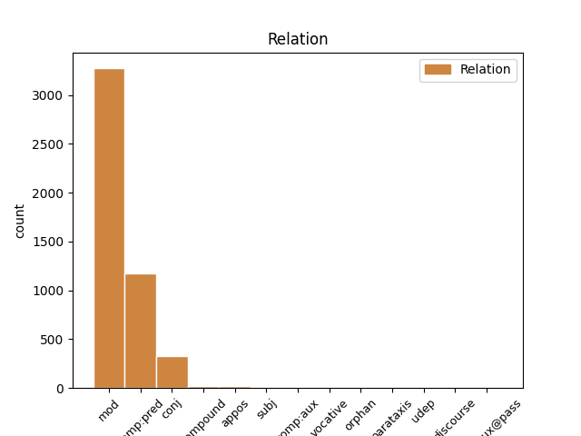
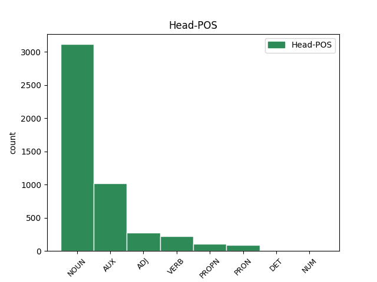
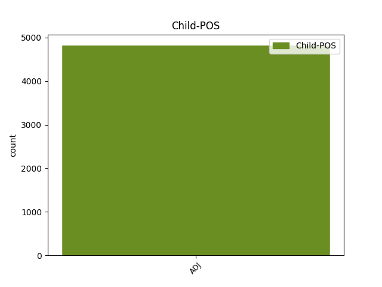

Distribution of features within this leaf



Agreement Rules sorted by frequency.
- When the dependent token is the modifer(mod) of the head token, and the dependent token is ADJ.
1 Care _ _ _ _ 0 _ _ _
2 s _ _ _ _ 0 _ _ _
3 -au _ _ _ _ 0 _ _ _
4 întărit _ _ _ _ 0 _ _ _
5 și _ _ _ _ 0 _ _ _
6 de _ _ _ _ 0 _ _ _
7 Domnia _ _ _ _ 0 _ _ _
8 mea _ _ _ _ 0 _ _ _
9 legiuindu _ _ _ _ 0 _ _ _
10 -să _ _ _ _ 0 _ _ _
11 și _ _ _ _ 0 _ _ _
12 aceaste _ _ _ _ 0 _ _ _
13 Ponturi _ _ _ _ 0 _ _ _
14 , _ _ _ _ 0 _ _ _
15 adăogat _ _ _ _ 0 _ _ _
16 în _ _ _ _ 0 _ _ _
17 pravela _ _ _ _ 0 _ _ _
18 pămîntului _ _ _ _ 0 _ _ _
19 , _ _ _ _ 0 _ _ _
20 supt _ _ _ _ 0 _ _ _
21 peceatea _ _ _ _ 0 _ _ _
22 Domnii _ _ _ _ 0 _ _ _
23 meale _ _ _ _ 0 _ _ _
24 precum _ _ _ _ 0 _ _ _
25 să _ _ _ _ 0 _ _ _
26 arată _ _ _ _ 0 _ _ _
27 mai _ _ _ _ 0 _ _ _
28 sus _ _ _ _ 0 _ _ _
29 , _ _ _ _ 0 _ _ _
30 care _ _ _ _ 0 _ _ _
31 s _ _ _ _ 0 _ _ _
32 -au _ _ _ _ 0 _ _ _
33 și _ _ _ _ 0 _ _ _
34 publicarisit _ _ _ _ 0 _ _ _
35 prin _ _ _ _ 0 _ _ _
36 toate _ _ _ _ 0 _ _ _
37 Judecătoriile _ _ _ _ 0 _ _ _
38 din _ _ _ _ 0 _ _ _
39 Domneasca domnesc ADJ Afpfsry Case=Acc,Nom|Definite=Def|Degree=Pos|Gender=Fem|Number=Sing 41 mod _ ref=COMPLETARE.10
40 noastră _ _ _ _ 0 _ _ _
41 Ţară țară NOUN Ncfsrn Case=Acc,Nom|Definite=Ind|Gender=Fem|Number=Sing 0 _ _ _
42 , _ _ _ _ 0 _ _ _
43 și _ _ _ _ 0 _ _ _
44 cătră _ _ _ _ 0 _ _ _
45 toți _ _ _ _ 0 _ _ _
46 lăcuitorii _ _ _ _ 0 _ _ _
47 de _ _ _ _ 0 _ _ _
48 obște _ _ _ _ 0 _ _ _
49 ca _ _ _ _ 0 _ _ _
50 să _ _ _ _ 0 _ _ _
51 fie _ _ _ _ 0 _ _ _
52 știute _ _ _ _ 0 _ _ _
53 și _ _ _ _ 0 _ _ _
54 să _ _ _ _ 0 _ _ _
55 se _ _ _ _ 0 _ _ _
56 urmeaze _ _ _ _ 0 _ _ _
57 făr _ _ _ _ 0 _ _ _
58 de _ _ _ _ 0 _ _ _
59 strămutare _ _ _ _ 0 _ _ _
60 . _ _ _ _ 0 _ _ _
1 În _ _ _ _ 0 _ _ _
2 scurt _ _ _ _ 0 _ _ _
3 care _ _ _ _ 0 _ _ _
4 dintre _ _ _ _ 0 _ _ _
5 cei _ _ _ _ 0 _ _ _
6 ce _ _ _ _ 0 _ _ _
7 să _ _ _ _ 0 _ _ _
8 judecă _ _ _ _ 0 _ _ _
9 să _ _ _ _ 0 _ _ _
10 va _ _ _ _ 0 _ _ _
11 dovedi _ _ _ _ 0 _ _ _
12 că _ _ _ _ 0 _ _ _
13 fiindcă _ _ _ _ 0 _ _ _
14 era _ _ _ _ 0 _ _ _
15 datoriu _ _ _ _ 0 _ _ _
16 , _ _ _ _ 0 _ _ _
17 și _ _ _ _ 0 _ _ _
18 cît _ _ _ _ 0 _ _ _
19 era fi AUX Vaii3s Mood=Ind|Number=Sing|Person=3|Tense=Imp 0 _ _ _
20 datoriu dator ADJ Afpmsrn Case=Acc,Nom|Definite=Ind|Degree=Pos|Gender=Masc|Number=Sing 19 comp:pred _ ref=PART_V_CAP_3.11
21 protivnicului _ _ _ _ 0 _ _ _
22 său _ _ _ _ 0 _ _ _
23 , _ _ _ _ 0 _ _ _
24 nu _ _ _ _ 0 _ _ _
25 i- _ _ _ _ 0 _ _ _
26 au _ _ _ _ 0 _ _ _
27 făcut _ _ _ _ 0 _ _ _
28 îndestulare _ _ _ _ 0 _ _ _
29 , _ _ _ _ 0 _ _ _
30 acela _ _ _ _ 0 _ _ _
31 să _ _ _ _ 0 _ _ _
32 să _ _ _ _ 0 _ _ _
33 îndatoreze _ _ _ _ 0 _ _ _
34 să _ _ _ _ 0 _ _ _
35 -i _ _ _ _ 0 _ _ _
36 plătească _ _ _ _ 0 _ _ _
37 și _ _ _ _ 0 _ _ _
38 cheltuiala _ _ _ _ 0 _ _ _
39 judecății _ _ _ _ 0 _ _ _
40 . _ _ _ _ 0 _ _ _
1 Prin _ _ _ _ 0 _ _ _
2 obștească _ _ _ _ 0 _ _ _
3 chibzuire _ _ _ _ 0 _ _ _
4 ce _ _ _ _ 0 _ _ _
5 s _ _ _ _ 0 _ _ _
6 -au _ _ _ _ 0 _ _ _
7 făcut _ _ _ _ 0 _ _ _
8 în _ _ _ _ 0 _ _ _
9 scris _ _ _ _ 0 _ _ _
10 prin _ _ _ _ 0 _ _ _
11 Anafora _ _ _ _ 0 _ _ _
12 de _ _ _ _ 0 _ _ _
13 sfinția _ _ _ _ 0 _ _ _
14 lor _ _ _ _ 0 _ _ _
15 Părinți _ _ _ _ 0 _ _ _
16 Arhierei _ _ _ _ 0 _ _ _
17 și _ _ _ _ 0 _ _ _
18 de _ _ _ _ 0 _ _ _
19 Dumnealor _ _ _ _ 0 _ _ _
20 cinstiții cinstit ADJ Afpmpry Case=Acc,Nom|Definite=Def|Degree=Pos|Gender=Masc|Number=Plur 0 _ _ _
21 și _ _ _ _ 0 _ _ _
22 credincioșii credincios ADJ Afpmpry Case=Acc,Nom|Definite=Def|Degree=Pos|Gender=Masc|Number=Plur 20 conj _ ref=COMPLETARE.9
23 Boerii _ _ _ _ 0 _ _ _
24 Veliți _ _ _ _ 0 _ _ _
25 ai _ _ _ _ 0 _ _ _
26 divanului _ _ _ _ 0 _ _ _
27 Domnii _ _ _ _ 0 _ _ _
28 meale _ _ _ _ 0 _ _ _
29 , _ _ _ _ 0 _ _ _
30 Halea _ _ _ _ 0 _ _ _
31 și _ _ _ _ 0 _ _ _
32 mazilii _ _ _ _ 0 _ _ _
33 . _ _ _ _ 0 _ _ _
1 Bună bun ADJ Afpfsrn Case=Acc,Nom|Definite=Ind|Degree=Pos|Gender=Fem|Number=Sing 2 compound _ _
2 ziua zi NOUN Ncfsry Case=Acc,Nom|Definite=Def|Gender=Fem|Number=Sing 0 _ _ _
3 , _ _ _ _ 0 _ _ _
4 măi _ _ _ _ 0 _ _ _
5 băete _ _ _ _ 0 _ _ _
6 , _ _ _ _ 0 _ _ _
7 Ți- _ _ _ _ 0 _ _ _
8 am _ _ _ _ 0 _ _ _
9 adus _ _ _ _ 0 _ _ _
10 , _ _ _ _ 0 _ _ _
11 un _ _ _ _ 0 _ _ _
12 cârd _ _ _ _ 0 _ _ _
13 de _ _ _ _ 0 _ _ _
14 fete _ _ _ _ 0 _ _ _
15 , _ _ _ _ 0 _ _ _
16 Nu _ _ _ _ 0 _ _ _
17 ți- _ _ _ _ 0 _ _ _
18 am _ _ _ _ 0 _ _ _
19 adus _ _ _ _ 0 _ _ _
20 una _ _ _ _ 0 _ _ _
21 două _ _ _ _ 0 _ _ _
22 , _ _ _ _ 0 _ _ _
23 Cu _ _ _ _ 0 _ _ _
24 Ileana _ _ _ _ 0 _ _ _
25 se _ _ _ _ 0 _ _ _
26 fac _ _ _ _ 0 _ _ _
27 nouă _ _ _ _ 0 _ _ _
28 . _ _ _ _ 0 _ _ _
1 Şi _ _ _ _ 0 _ _ _
2 cum _ _ _ _ 0 _ _ _
3 se _ _ _ _ 0 _ _ _
4 jelea _ _ _ _ 0 _ _ _
5 Şi- _ _ _ _ 0 _ _ _
6 amîndoi _ _ _ _ 0 _ _ _
7 mergea _ _ _ _ 0 _ _ _
8 , _ _ _ _ 0 _ _ _
9 Cuc _ _ _ _ 0 _ _ _
10 pe _ _ _ _ 0 _ _ _
11 sus _ _ _ _ 0 _ _ _
12 cîntînd _ _ _ _ 0 _ _ _
13 , _ _ _ _ 0 _ _ _
14 Ea _ _ _ _ 0 _ _ _
15 pe _ _ _ _ 0 _ _ _
16 jos _ _ _ _ 0 _ _ _
17 plîngînd _ _ _ _ 0 _ _ _
18 , _ _ _ _ 0 _ _ _
19 Ea _ _ _ _ 0 _ _ _
20 iar _ _ _ _ 0 _ _ _
21 începea _ _ _ _ 0 _ _ _
22 , _ _ _ _ 0 _ _ _
23 De _ _ _ _ 0 _ _ _
24 cuc _ _ _ _ 0 _ _ _
25 se _ _ _ _ 0 _ _ _
26 ruga _ _ _ _ 0 _ _ _
27 Şi _ _ _ _ 0 _ _ _
28 se _ _ _ _ 0 _ _ _
29 jeluia _ _ _ _ 0 _ _ _
30 , _ _ _ _ 0 _ _ _
31 Din _ _ _ _ 0 _ _ _
32 gură _ _ _ _ 0 _ _ _
33 -i _ _ _ _ 0 _ _ _
34 zicea _ _ _ _ 0 _ _ _
35 : _ _ _ _ 0 _ _ _
36 Cuculeţule cuculeț NOUN Ncmsvy Case=Voc|Definite=Def|Gender=Masc|Number=Sing 0 _ _ _
37 , _ _ _ _ 0 _ _ _
38 Mititelule mititel ADJ Afpmsvy Case=Voc|Definite=Def|Degree=Pos|Gender=Masc|Number=Sing 36 appos _ SpaceAfter=No
39 . _ _ _ _ 0 _ _ _
1 Sedechia _ _ _ _ 0 _ _ _
2 dzise _ _ _ _ 0 _ _ _
3 : _ _ _ _ 0 _ _ _
4 " _ _ _ _ 0 _ _ _
5 Cine- _ _ _ _ 0 _ _ _
6 ș _ _ _ _ 0 _ _ _
7 piarde piarde ADJ Afpfsrn Case=Acc,Nom|Definite=Ind|Degree=Pos|Gender=Fem|Number=Sing 12 subj _ _
8 credința _ _ _ _ 0 _ _ _
9 mai _ _ _ _ 0 _ _ _
10 mult _ _ _ _ 0 _ _ _
11 n- _ _ _ _ 0 _ _ _
12 are avea VERB Vmip3s Mood=Ind|Number=Sing|Person=3|Tense=Pres|VerbForm=Fin 0 _ _ _
13 ce _ _ _ _ 0 _ _ _
14 piarde _ _ _ _ 0 _ _ _
15 " _ _ _ _ 0 _ _ _
16 . _ _ _ _ 0 _ _ _
1 Trece _ _ _ _ 0 _ _ _
2 mândra _ _ _ _ 0 _ _ _
3 Murășu _ _ _ _ 0 _ _ _
4 , _ _ _ _ 0 _ _ _
5 și _ _ _ _ 0 _ _ _
6 mă _ _ _ _ 0 _ _ _
7 uscă _ _ _ _ 0 _ _ _
8 cu _ _ _ _ 0 _ _ _
9 doru _ _ _ _ 0 _ _ _
10 , _ _ _ _ 0 _ _ _
11 ca _ _ _ _ 0 _ _ _
12 și _ _ _ _ 0 _ _ _
13 soarele soare NOUN Ncmsry Case=Acc,Nom|Definite=Def|Gender=Masc|Number=Sing 0 _ _ _
14 fânu fânu ADJ Afpmsrn Case=Acc,Nom|Definite=Ind|Degree=Pos|Gender=Masc|Number=Sing 13 orphan _ Rhyme=9,ID3|SpaceAfter=No|Type=Mono
15 . _ _ _ _ 0 _ _ _
1 Ardig _ _ _ _ 0 _ _ _
2 dzise _ _ _ _ 0 _ _ _
3 : _ _ _ _ 0 _ _ _
4 " _ _ _ _ 0 _ _ _
5 O _ _ _ _ 0 _ _ _
6 , _ _ _ _ 0 _ _ _
7 putearnice puternic ADJ Afpmsvn Case=Voc|Definite=Ind|Degree=Pos|Gender=Masc|Number=Sing 14 vocative _ _
8 mai _ _ _ _ 0 _ _ _
9 de _ _ _ _ 0 _ _ _
10 toți _ _ _ _ 0 _ _ _
11 oamenii _ _ _ _ 0 _ _ _
12 , _ _ _ _ 0 _ _ _
13 cum _ _ _ _ 0 _ _ _
14 cădzuș cădea VERB Vmis1s Mood=Ind|Number=Sing|Person=1|Tense=Past|VerbForm=Fin 0 _ _ _
15 așa _ _ _ _ 0 _ _ _
16 " _ _ _ _ 0 _ _ _
17 . _ _ _ _ 0 _ _ _
1 Frunză _ _ _ _ 0 _ _ _
2 verde _ _ _ _ 0 _ _ _
3 de _ _ _ _ 0 _ _ _
4 trei _ _ _ _ 0 _ _ _
5 flori _ _ _ _ 0 _ _ _
6 , _ _ _ _ 0 _ _ _
7 Ciobănaș _ _ _ _ 0 _ _ _
8 de _ _ _ _ 0 _ _ _
9 la _ _ _ _ 0 _ _ _
10 miori _ _ _ _ 0 _ _ _
11 , _ _ _ _ 0 _ _ _
12 Moartea _ _ _ _ 0 _ _ _
13 unde _ _ _ _ 0 _ _ _
14 ți- _ _ _ _ 0 _ _ _
15 a avea AUX Vaip3s Mood=Ind|Number=Sing|Person=3|Tense=Pres 0 _ _ _
16 fost fost ADJ Afpmsrn Case=Acc,Nom|Definite=Ind|Degree=Pos|Gender=Masc|Number=Sing 15 comp:aux _ _
17 să _ _ _ _ 0 _ _ _
18 mori _ _ _ _ 0 _ _ _
19 ? _ _ _ _ 0 _ _ _
1 Ce _ _ _ _ 0 _ _ _
2 fum fi AUX Vais1p Mood=Ind|Number=Plur|Person=1|Tense=Past 0 _ _ _
3 lini _ _ _ _ 0 _ _ _
4 ( _ _ _ _ 0 _ _ _
5 Blînzi blând ADJ Afpmprn Case=Acc,Nom|Definite=Ind|Degree=Pos|Gender=Masc|Number=Plur 2 parataxis _ ref=PAVEL_SOLUN.1_2.7|SpaceAfter=No
6 ) _ _ _ _ 0 _ _ _
7 întru _ _ _ _ 0 _ _ _
8 voi _ _ _ _ 0 _ _ _
9 . _ _ _ _ 0 _ _ _
1 Şi _ _ _ _ 0 _ _ _
2 nu _ _ _ _ 0 _ _ _
3 întristareți _ _ _ _ 0 _ _ _
4 pre _ _ _ _ 0 _ _ _
5 Duhul _ _ _ _ 0 _ _ _
6 Sfînt _ _ _ _ 0 _ _ _
7 al _ _ _ _ 0 _ _ _
8 lui _ _ _ _ 0 _ _ _
9 Dumnezău _ _ _ _ 0 _ _ _
10 pren _ _ _ _ 0 _ _ _
11 carele _ _ _ _ 0 _ _ _
12 sînteți fi AUX Vaip2p Mood=Ind|Number=Plur|Person=2|Tense=Pres 0 _ _ _
13 sămnați semna ADJ Afpmprn Case=Acc,Nom|Definite=Ind|Degree=Pos|Gender=Masc|Number=Plur 12 comp:aux@pass _ ref=PAVEL_EFES_4.30
14 spre _ _ _ _ 0 _ _ _
15 zuoa _ _ _ _ 0 _ _ _
16 răscumpărării _ _ _ _ 0 _ _ _
17 . _ _ _ _ 0 _ _ _
1 Bună bun ADJ Afpfsrn Case=Acc,Nom|Definite=Ind|Degree=Pos|Gender=Fem|Number=Sing 2 discourse _ _
2 dimineața dimineața NOUN Ncmsry Case=Acc,Nom|Definite=Def|Gender=Masc|Number=Sing 0 _ _ _
3 , _ _ _ _ 0 _ _ _
4 apă _ _ _ _ 0 _ _ _
5 curgătoare _ _ _ _ 0 _ _ _
6 , _ _ _ _ 0 _ _ _
7 Mulțumesc _ _ _ _ 0 _ _ _
8 , _ _ _ _ 0 _ _ _
9 maică _ _ _ _ 0 _ _ _
10 , _ _ _ _ 0 _ _ _
11 frumoasă _ _ _ _ 0 _ _ _
12 ca _ _ _ _ 0 _ _ _
13 o _ _ _ _ 0 _ _ _
14 floare _ _ _ _ 0 _ _ _
15 . _ _ _ _ 0 _ _ _
1 Cînd _ _ _ _ 0 _ _ _
2 femeia _ _ _ _ 0 _ _ _
3 întru _ _ _ _ 0 _ _ _
4 început _ _ _ _ 0 _ _ _
5 are _ _ _ _ 0 _ _ _
6 pricini pricină NOUN Ncfprn Case=Acc,Nom|Definite=Ind|Gender=Fem|Number=Plur 0 _ _ _
7 împotrivitoare împotrivitor ADJ Afpfprn Case=Acc,Nom|Definite=Ind|Degree=Pos|Gender=Fem|Number=Plur 6 udep _ ref=PART_III_CAP_16.6.3
8 spre _ _ _ _ 0 _ _ _
9 înpreunare _ _ _ _ 0 _ _ _
10 , _ _ _ _ 0 _ _ _
11 și _ _ _ _ 0 _ _ _
12 nu _ _ _ _ 0 _ _ _
13 să _ _ _ _ 0 _ _ _
14 pot _ _ _ _ 0 _ _ _
15 tămădui _ _ _ _ 0 _ _ _
16 . _ _ _ _ 0 _ _ _
Disagree Examples:
1 Și _ _ _ _ 0 _ _ _
2 mearsără merge VERB Vmis3s Mood=Ind|Number=Sing|Person=3|Tense=Past|VerbForm=Fin 0 _ _ _
3 în _ _ _ _ 0 _ _ _
4 loc _ _ _ _ 0 _ _ _
5 pustiu _ _ _ _ 0 _ _ _
6 , _ _ _ _ 0 _ _ _
7 cu _ _ _ _ 0 _ _ _
8 corabiia _ _ _ _ 0 _ _ _
9 singuri singur ADJ Afpmprn Case=Acc,Nom|Definite=Ind|Degree=Pos|Gender=Masc|Number=Plur 2 comp:pred _ ref=MARC6.32|SpaceAfter=No
10 . _ _ _ _ 0 _ _ _
1 Și _ _ _ _ 0 _ _ _
2 era _ _ _ _ 0 _ _ _
3 pre _ _ _ _ 0 _ _ _
4 cale _ _ _ _ 0 _ _ _
5 suindu _ _ _ _ 0 _ _ _
6 în _ _ _ _ 0 _ _ _
7 Erosalim _ _ _ _ 0 _ _ _
8 și _ _ _ _ 0 _ _ _
9 Iisus _ _ _ _ 0 _ _ _
10 mergea _ _ _ _ 0 _ _ _
11 înainte _ _ _ _ 0 _ _ _
12 -le _ _ _ _ 0 _ _ _
13 și _ _ _ _ 0 _ _ _
14 să _ _ _ _ 0 _ _ _
15 spămîntară _ _ _ _ 0 _ _ _
16 și _ _ _ _ 0 _ _ _
17 , _ _ _ _ 0 _ _ _
18 mergînd _ _ _ _ 0 _ _ _
19 după _ _ _ _ 0 _ _ _
20 El _ _ _ _ 0 _ _ _
21 , _ _ _ _ 0 _ _ _
22 se _ _ _ _ 0 _ _ _
23 temea _ _ _ _ 0 _ _ _
24 iară _ _ _ _ 0 _ _ _
25 El _ _ _ _ 0 _ _ _
26 , _ _ _ _ 0 _ _ _
27 lundu _ _ _ _ 0 _ _ _
28 pre _ _ _ _ 0 _ _ _
29 cei _ _ _ _ 0 _ _ _
30 doisprăzeace _ _ _ _ 0 _ _ _
31 , _ _ _ _ 0 _ _ _
32 începu _ _ _ _ 0 _ _ _
33 lor _ _ _ _ 0 _ _ _
34 a _ _ _ _ 0 _ _ _
35 spune _ _ _ _ 0 _ _ _
36 carele _ _ _ _ 0 _ _ _
37 era fi AUX Vaii3s Mood=Ind|Number=Sing|Person=3|Tense=Imp 0 _ _ _
38 venitoare venitor ADJ Afpfprn Case=Acc,Nom|Definite=Ind|Degree=Pos|Gender=Fem|Number=Plur 37 comp:pred _ ref=MARC10.32
39 spre _ _ _ _ 0 _ _ _
40 El _ _ _ _ 0 _ _ _
41 . _ _ _ _ 0 _ _ _
1 Iară _ _ _ _ 0 _ _ _
2 ei _ _ _ _ 0 _ _ _
3 prinzînd _ _ _ _ 0 _ _ _
4 pre _ _ _ _ 0 _ _ _
5 el _ _ _ _ 0 _ _ _
6 , _ _ _ _ 0 _ _ _
7 bătură _ _ _ _ 0 _ _ _
8 -l _ _ _ _ 0 _ _ _
9 , _ _ _ _ 0 _ _ _
10 și _ _ _ _ 0 _ _ _
11 -l _ _ _ _ 0 _ _ _
12 sloboziră slobozi VERB Vmis3p Mood=Ind|Number=Plur|Person=3|Tense=Past|VerbForm=Fin 0 _ _ _
13 deșărt deșert ADJ Afpmsrn Case=Acc,Nom|Definite=Ind|Degree=Pos|Gender=Masc|Number=Sing 12 comp:pred _ ref=MARC12.3|SpaceAfter=No
14 . _ _ _ _ 0 _ _ _
1 Și _ _ _ _ 0 _ _ _
2 mulțime _ _ _ _ 0 _ _ _
3 multă _ _ _ _ 0 _ _ _
4 asculta asculta VERB Vmii3s Mood=Ind|Number=Sing|Person=3|Tense=Imp|VerbForm=Fin 0 _ _ _
5 pe _ _ _ _ 0 _ _ _
6 El _ _ _ _ 0 _ _ _
7 , _ _ _ _ 0 _ _ _
8 bucuroși bucuros ADJ Afpmprn Case=Acc,Nom|Definite=Ind|Degree=Pos|Gender=Masc|Number=Plur 4 comp:pred _ ref=MARC12.37|SpaceAfter=No
9 . _ _ _ _ 0 _ _ _
1 Carii _ _ _ _ 0 _ _ _
2 înghit _ _ _ _ 0 _ _ _
3 casele _ _ _ _ 0 _ _ _
4 văduolor _ _ _ _ 0 _ _ _
5 , _ _ _ _ 0 _ _ _
6 și _ _ _ _ 0 _ _ _
7 la _ _ _ _ 0 _ _ _
8 arătare _ _ _ _ 0 _ _ _
9 rugîndu- _ _ _ _ 0 _ _ _
10 să _ _ _ _ 0 _ _ _
11 cu _ _ _ _ 0 _ _ _
12 rugăciune rugăciune NOUN Ncfsrn Case=Acc,Nom|Definite=Ind|Gender=Fem|Number=Sing 0 _ _ _
13 lungi lung ADJ Afpfprn Case=Acc,Nom|Definite=Ind|Degree=Pos|Gender=Fem|Number=Plur 12 mod _ ref=MARC12.40|SpaceAfter=No
14 : _ _ _ _ 0 _ _ _
15 aceștea _ _ _ _ 0 _ _ _
16 vor _ _ _ _ 0 _ _ _
17 lua _ _ _ _ 0 _ _ _
18 mai _ _ _ _ 0 _ _ _
19 grea _ _ _ _ 0 _ _ _
20 giudecată _ _ _ _ 0 _ _ _
21 . _ _ _ _ 0 _ _ _